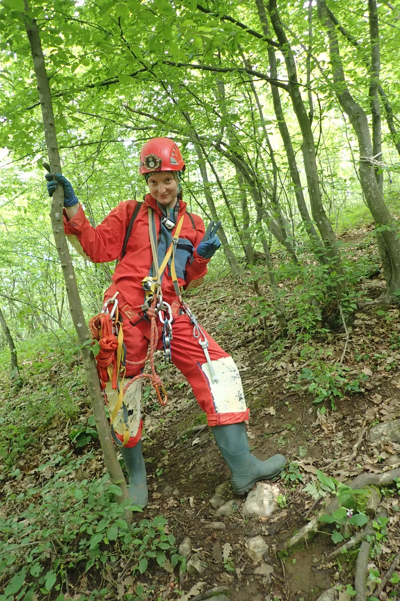

Mandelaja
u turobna vremena višetjednih neprestanih kiša i sivila, u nenadano sunčano subotnje jutro, našli smo se nas nekoliko kako bi se ukrcali na vlak za Oštarije, „kao nekada špiljari prije nego što su nabavili aute...“.

Napisala: Sanda Škrbina Foto: Damjan Ketükil 18.05., u turobna vremena višetjednih neprestanih kiša i sivila, u nenadano sunčano subotnje jutro, našli smo se nas nekoliko (Čajko, Ana V., Ana L., Dalibor, Mirisa, Dora P., Gorana i Sanda) u manje-više 7:30 kako bi se ukrcali na vlak za Oštarije, kako kaže Ana „kao nekada špiljari prije nego što su nabavili aute...“.
Cilj je bila jama Mandelaja, odnosno monitoring iste. Ako se dobro sjećam vlak je oko 8 i 15 napustio kolodvor i uživali smo u dvosatnoj udobnoj vožnjici do Oštarija uz većinom lijepe prizore većinom probuđenog zelenila. :) U Karlovcu nam se pridružio i Damjan, dok nam se u samim Oštarijama pridružio Jonathan, kojega se nekadašnji speleolozi nisu posebno dojmili pa se odlučio na suvremeniji dolazak svojim kombijem. Sa stanice vlaka smo uz prugu pješačili još kojih 5 minuta te pristupili jami nakon još 10-ak minuta hoda putem kroz šumu bez većih poteškoća. Gore smo se natrpali hranom, zakamuflirali stvari i krenuli na posao, tj. Ane su krenule u postavljanje jame, dok smo se mi ostali dogovorali oko redoslijeda ulaska, polako navlačili opremu, obavljali male i velike, nužde, tu i tamo još nešto pojeli itd. Spuštanje u jamu bilo je poprilično blatan posao, ali, barem iz perspektive novopečenog speleologa pripravnika i vrlo lijep i dojmljiv. :)
Ana je postavila tri sidrišta i, nakon što smo se svi sigurno spustili, krenuli smo u dvosatnu šetnju, koja se sastojala od tu i tamo provlačenja, zaobilaženja vode ili kupanja, ovisno o preferencijama. Ane su bile vođe i nositelji karte i taj su posao odlično odradile, uz možda jedno neznatnije skretanje s puta koje se brzo razriješilo. Pri povratku smo ostavili Ane i Dalibora da se pozabave projektom, a ostatak, malo umorniji i tromiji nego na početku, se posvetio projektu izlaska na danje svjetlo. Kada smo se svi iskopali i riješili blata do prihvatljive mjere te otvorili pivice u namjeri da uživamo u ta vremena rijetkim zrakama Sunca, odlučila je prvo pomalo, a onda dosta sigurnije u sebe, pasti kiša. Brzo smo se popakirali i odlučili pričekati ostatak na stanici vlaka. Tamo smo pronašli svoje utočište u prostoriji ispred wc-a gdje smo dovršili pivu i pokušali se suzdržati da ne dovršimo svu hranu. Dalibor i Ane su se pridružili oko pola 8, taman na vrijeme za presvlačenje i pakiranje prije našeg vlaka za povratak u Zagreb. Nažalost smo od oštarijskog šefa kolodvora saznali da je prva birtija udaljena oko 2 km pa smo se nastavili družiti u utočištu i naokolo gdje nam zapravo i nije ništa falilo, dapače. Zadnji vlak za doma je trebao doći u 20:30, što smo naivno prihvatili kao istinu u manjku iskustva starih špiljara da nas zaštiti. :) Naredno vrijeme proveli smo u mantranju, fotografiranju, razgovoru, smijehu i iščekivanju šefa kolodvora s dobrim vijestima. Nakon 40-ak minuta čekanja stigao je jedan moderan vlak u kojem smo činili većinu putnika uz njih još par mladolikih predanih želji za subotnjim izlaskom u Karlovcu ili Zagrebu. Noćna vožnja je također bila udobna, još ljepša radi čekanja, a kondukter iznimno simpatičan čovjek, iako je kada mu je predloženo da zabilježimo trenutak i slikamo se s njim, ipak tu povukao granicu. Sljedeći dan smo se našli na potoku na Maksimiru da raskrstimo s ostatkom blata koje je s nama doputovalo i krenemo u novi tjedan.
U svakom slučaju jako lijep i zabavan jednodnevni izlet, svakako vlak ima svojih čari i treba ih ponekad iskoristiti! :)
[gallery ids="2640,2641,2642,2643,2644,2645,2646" type="rectangular"]